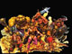

 |
|
Comte Giamo CasanaboCussununda | |
C'est un nain. Mais c'est aussi l'amant le plus acharné du Disque-Monde. Il s'en prétant aussi le plus grand menteur comme le proclame sa carte de visite : Deuxième plus grand amant du monde. Mais il ne s'agit peut-être que de mensonges. Casanabo mesure environ 1,15 centimètres, et a la forme générale de ses congénères. Seulement, contrairement à eux il préfère les perruques, la dentelle et le satin conscient que les grosses chaussures ferrées et les épaisses barbes hirsutes n'attirent que les dames aux goûts très spéciaux. Les activités auxquelles les autres nains ne se livrent que très rarement lorsque la nature réclame son dû, lui y consacre la plupart de son temps, parfois à l'arrière d'une chaise à porteurs et en une occasion la tête en bas dans un arbre. Il faut tout de même lui laisser un souci du détail typiquement nain. Il éprouve un penchant naturel (en fait, loin du simple penchant, il s'est déjà cassé la figure et est encore en train de rouler sur le sol...) pour Nounou Ogg, qui pourrait sans doute faire office de son équivalent féminin. Casanabo s'acharne dans : Le Faucheur, Mécomptes de fées, Nobliaux et sorcières. |